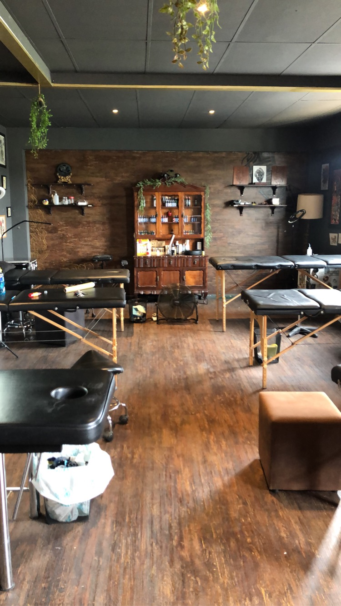
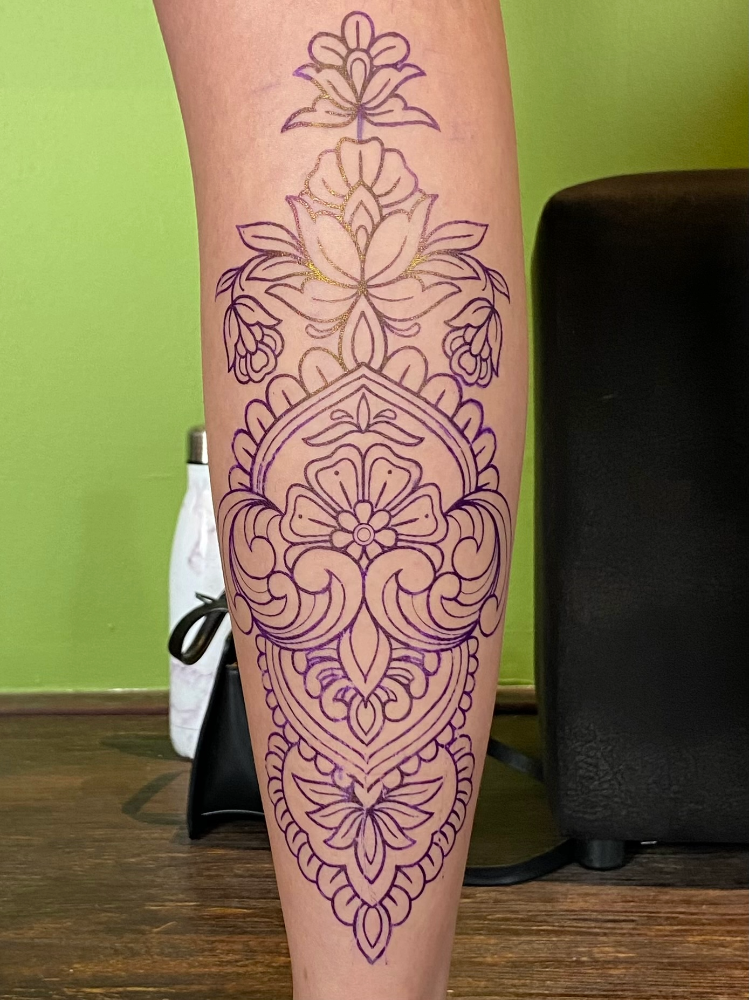
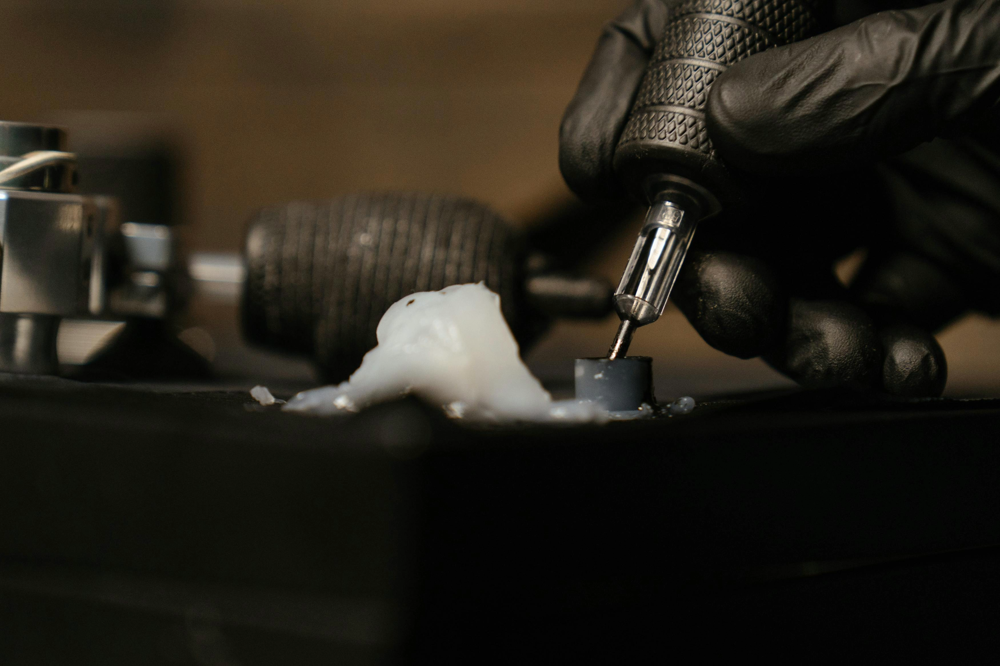

About Us!
Our Story
Founding Vision:
Our story starts with our founder, Dylan Harris, who lives and breathes
art. Not just in the traditional sense but in all forms whether its drawing,
painting or music but
her obsession lies in art in the form of tattoos. Art is all around us but here at Dylan's Gallery
we create art that you can
carry with you for a lifetime. Your body is our canvas. We started off
as a mobile service doing house calls but over the 5 years since our
establishment we have developed
beyond our wildest expecations and grown tremendously thanks to amazing artists and clients.
Our hope
is that through all of you we can continue bringing art into our community, one tattoo at a time.


Our Philosophy:
Here at Dyaln's Gallery there is nothing too weird or too crazy for us. Simply put, our sole purpose
is to bring your vision to life.
That is why we do custom tatoo deisgns based on what you bring us.
Our artists specialise in any style you can think of so don't
worry about a thing. Client experience
is a top priority for us so you can expect a comfortable, safe and creative environment
when you come
to our parlour. You are in safe hands here at Dylan's Gallery.
Our Vision:
Our vision is to encourage you to express your individuality through artowrks that you love and carry witth you forever.
How Things Work
Everything is about convenience that's why we went ahead and amde things easier for you. To book an
appointment with us,
all you need to do is head over to our Contact Us
page and fill out the form. Once that is done you will receive a message from
one of our artists via
WhatsApp. They will ask you to send through your design or any ideas you have. The artist will then
work
with you in creating the tatoo design you want.You will then receive your appointment information
(Dates and Times) so that
you are able to come through to the parlour.Once you arrive you will be
greeted by one of our team members and you will be
shown to our waiting area. While you are there you
can browse through one of our design booklets, take in the artwork on the wall
or enjoy some music from
Cayd's playlist who is one of our artists. This is so that we can prep the equipment and work station.
All that is left is for you to get your tattoo!

Health and Safety
Sterilisation protocols at our parlour are hospital standard to ensure your safety and well-being. We
use single-use needles
and equipment which are disposed of after each session. Any re-usable tools are
sterilised in medical-grade fashion while
all surfaces and work stations are disinfected between each client.
We only have the best artists. All are well-trained,
certified and licensed. Our staff regularly go through
health and safety seminars to ensure the best and safest environment
for all our clients. We use only high
quality, non-toxic ink sourced from well respected suplliers. We do ask clients to ensure
they dont have any
ink-related allergies and if they are not sure, we offer patch tests. You can find out more about aftercare
procedures
under our FAQ's page.